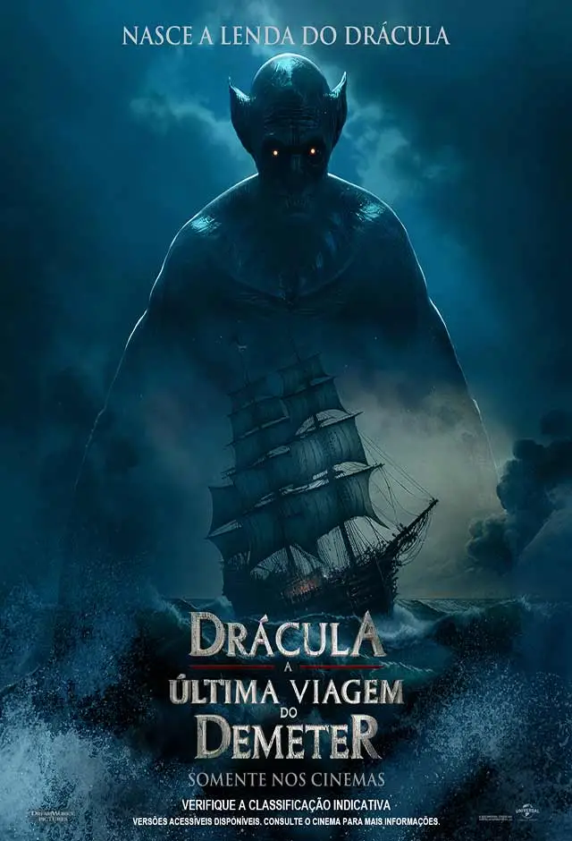

<!DOCTYPE html>
<html lang=" pt-br ">

</html>

<head>
    <link rel="stylesheet" href="css/trabalho2.css">
    <title>A Última Viagem de Demeter</title>

</head>

<body>


    <div id="page-container">
        <div id="content-wrap">
         

            <div class="horz">
                
            </div>
        
        
        
        
        
        
        
        
        
        
            <hr>
        
        
        
      
                  
                
                    <div class="horz">
              
                        <h2><a href="Aventura.html">Aventura</a> | <a href="Terror.html">Terror</a> | <a href="Comedia.html">Comédia</a></h2>
                </div>
                 
           
                
             
        
                <div class="caixa3">
        
                    
                    <br><br><br><br><br><br><br><br><br><br><br><br><br><br><br><br><br><br><br><br><br><br><br><br><br><br><br><br><br><br><br><br><br><br><br><br>
                </div>
          
                <div class="caixa4">
                    
                    <b>Diretor: </b> André Øvredal
                    <br>
                    <br>
                    <b>Com: </b> Aisling Franciosi - Liam Cunningham - Javier Botet - Corey Hawkins
                    <br>
                    <br>
                    <b>Gênero: </b>  Terror, Suspense
                    <br>
                    <br>
                    <b>Censura: </b> 16 anos
                    <br>
                    <br>
                    <b>Tempo de duração: </b> 1h 59min
                    <br>
                    <br>
                    <b>Sinopse: </b> Em Drácula - A Última Viagem do Deméter, inspirado na icônica lenda do vampiro Drácula, acompanhamos a terrível história do navio Deméter, que foi fretado para transportar cargas particulares. Estranhos eventos acontecem à tripulação, que tenta sobreviver à viagem oceânica, perseguidos todas as noites por uma presença impiedosa a bordo do navio. Quando o Deméter finalmente chega à costa, é apenas um navio carbonizado e abandonado. Não há vestígios da tripulação. A trama se baseia em um único capítulo do livro clássico de Bram Stoker.

                </div>
        
        
        
        
        
        
        
        
            <div class="vertical-line"></div>
        
            <div class="caixa">
        
        
        
                <a href="Pagina_principal.html">
                    <h2>Principal</h2>
                </a>
        
                <a href="Filmes.html">
                    <h2>Filmes</h2>
                </a>
        
        
                <a href="Trailers.html">
                    <h2>Trailers</h2>
                </a>
        
                <a href="Trilha_sonora.html">
                    <h2>Trilha Sonora</h2>
                </a>
        
                <a href="Contatos.html">
                    <h2>Contato</h2>
                </a>
        
                <a href="Sobre.html">
                    <h2>Sobre</h2>
                </a>
        
            
            </div>


        </div>
        <footer id="footer">
            <hr>
            <div class="horz">
            <fonte-maravilhosa>©Matheus Kersul & Victor Vellasco - Instituto Federal do Sul de Minas Gerais- 2024</fonte-maravilhosa>
        </div>
        </footer>
      </div>


</body>